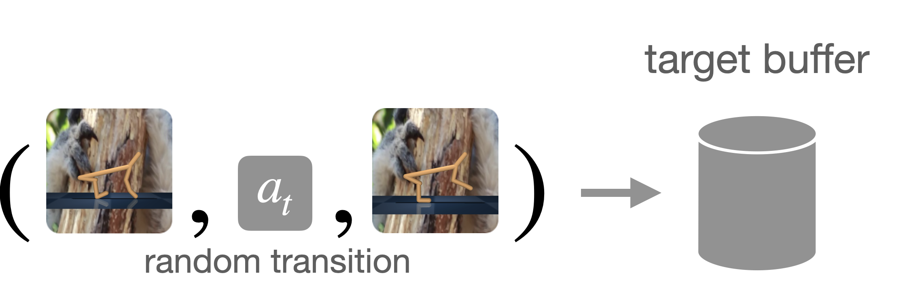
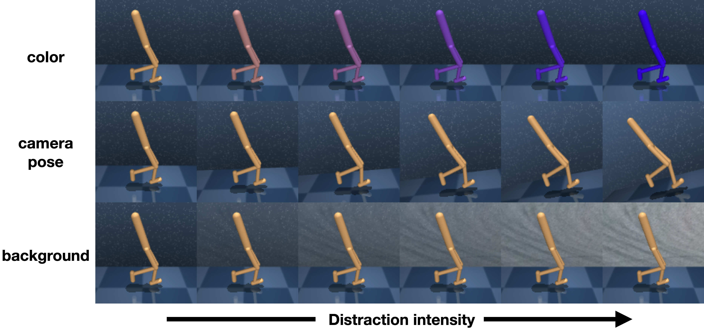
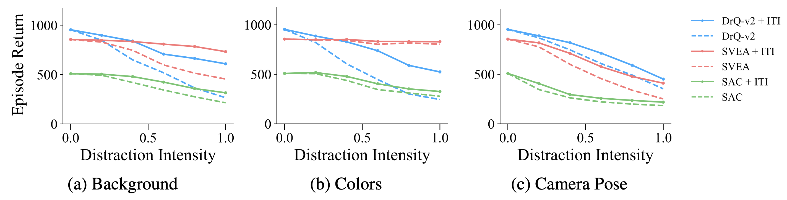
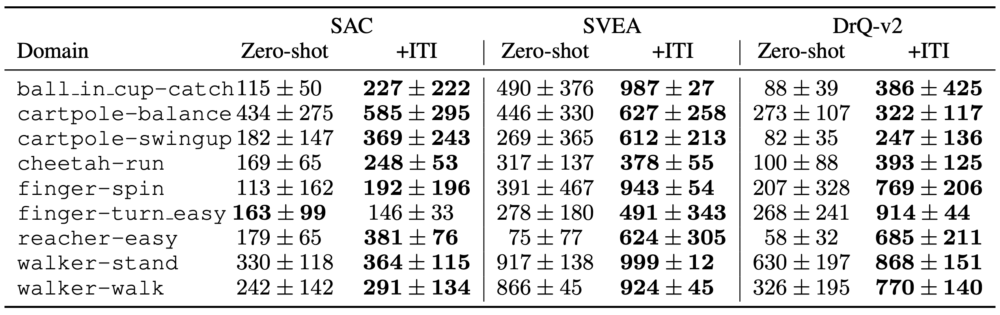

Invariance Through Inference
Takuma Yoneda,1 Ge Yang,2 Matthew Walter,1 Bradly Stadie1
1TTI-Chicago, 2MIT CSAIL
CODE|PAPER
Overview
Inverse Through Inference (ITI) is a self-supervised adaptation method for a Reinforcement Learning agent. ITI adapts the encoder of an agent to a target domain without access to reward.
Abstract
We introduce a general approach, called Invariance Through Inference, for improving the test-time performance of an agent in deployment environments with unknown perceptual variations. Instead of producing invariant visual features through interpolation, invariance through inference turns adaptation at deployment-time into an unsupervised learning problem. This is achieved in practice by deploying a straightforward algorithm that tries to match the distribution of latent features to the agent's prior experience, without relying on paired data. Although simple, we show that this idea leads to surprising improvements on a variety of adaptation scenarios without access to deployment-time rewards, including changes in camera poses and lighting conditions. Results are presented on challenging distractor control suite, a robotics environment with image-based observations.
Motivation
Pixel-based RL agents are known to be brittle against distractions, due to its large shift in observation space. A typical approach to this issue is to apply data augmentation. This corresponds to expanding the support of the training distribution, as shown in the green circle below.
Training with augmented observations makes the agent more robust against distractions,
however, as the target distribution (the pink circle below) goes far away from training,
more and more augmentations becomes necessary, which becomes infeasible at some point.

When we have some knowledge of the target (test) domain, a better approach would be domain adaptation that adapt the agent to the target (test) domain. In this paper, we assume the target domain is accessible except for its reward, and propose Invariance Through Inference (ITI) that performs self-supervised domain adaptation. Specifically, ITI adapts an observation encoder so that the pretrained downstream policy \(\pi(a|z)\) can transfer to the target domain without modification.
We consider that it is the large distribution shift in the latent space that causes a poor performance in the target domain. Our approach attempts to undo this shift, by adapting the encoder based on two objectives: (1) distribution matching and (2) dynamics consistency.
Method
Given an agent pretrained in a source domain, a random policy collects transitions in the source domain.
The observations are encoded with pretrained encoder, and the resulting latent transitions \((z_t, a_t, z_{t+1})\) are stored into source buffer.
 Succeedingly, we pretrain dynamics networks \(C_\text{dyn}\) using samples from the buffer.
\(C_\text{dyn}\) consists of forward dynamics network \(\hat{z}_{t+1} = C_\text{fwd}(z_t, a_t)\)
and inverse dynamics network \(\hat{a}_t = C_\text{inv}(z_t, z_{t+1})\).
We can think of this step as implicitly encoding the latent transition structure (somewhat like MDP) of the source domain into the weights of these networks.
Succeedingly, we pretrain dynamics networks \(C_\text{dyn}\) using samples from the buffer.
\(C_\text{dyn}\) consists of forward dynamics network \(\hat{z}_{t+1} = C_\text{fwd}(z_t, a_t)\)
and inverse dynamics network \(\hat{a}_t = C_\text{inv}(z_t, z_{t+1})\).
We can think of this step as implicitly encoding the latent transition structure (somewhat like MDP) of the source domain into the weights of these networks.
We also collect random transitions in the target domain. But this time we store transitions with raw observations \((o_t, a_t, o_{t+1})\). 
Once the preprocessing steps described above are completed, the main adaptation step begins. We use sample transitions from source and target buffer, and train encoder \(F\) (intialized to the pretrained weights) and discriminator \(D\) (initialized randomly). * You can download the static version here
Experiments
To experiment our adaptation scheme on various type of target domains, we deployed our agents in DeepMind Control suite. Especially, we employed a modified version of DistractCS that provides color, camera, and background distractions to DeepMind Control suite. 
The plot below shows how much gain ITI can achieve on top of base policies. DrQ-v2 and SVEA are extensions of SAC that incorporates data augmentation. All of the methods are first trained in source domain (i.e., standard, non-distracting domain), and then directly deployed in taget domain (zero-shot). Zero-shot performance are shown as dashed lines below. As expected, the performance decreases as the intensity goes up.  On top of these, we applied ITI to adapt the encoders.
